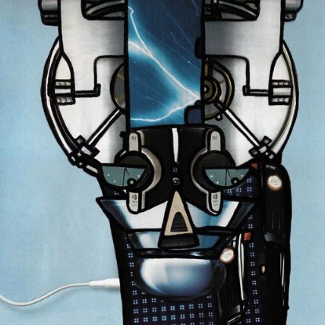
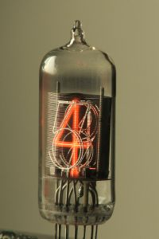

Intro
About "Strange Things":
 New and exciting genres of art emerge as artists, scientists and technologists bring together their expertise to push the boundaries of what is possible. Dorkbot-sea's exhibition, People Doing Strange Things with Electricity, showcases innovative trends in modern art by bringing together established and emerging artists who work with electricity in a significant way either in their art, or in its creation. For the last show in 2005, over 1200 people visited the exhibit during the opening night event. Please see this page for an overview of our last exhibit including a list of artists, and here for pictures.
New and exciting genres of art emerge as artists, scientists and technologists bring together their expertise to push the boundaries of what is possible. Dorkbot-sea's exhibition, People Doing Strange Things with Electricity, showcases innovative trends in modern art by bringing together established and emerging artists who work with electricity in a significant way either in their art, or in its creation. For the last show in 2005, over 1200 people visited the exhibit during the opening night event. Please see this page for an overview of our last exhibit including a list of artists, and here for pictures.
 This year, in addition to showcasing works that in some way involve the use of electricity, we are emphasizing interactivity: art installations that interact with the environment, with participant observers, and with other installations. "Strange Things" that pique curiosity and inspire a desire to touch. The Dorkbot Overlord Committee, with guest juror Misha Neininger, Executive Director of 911 Media Arts Center, selected over 25 pieces from regional artists. Our focus on interactive electronic projects encompasses a broad range of creative media: art that borders the line between physical and digital art, digital art and experimental media, kinetic sculpture, reactive sculpture, sound and light installations, web-based art, ubiquitous computing...to name a few.
Schedule

The opening party for "Strange Things" will be Saturday December 8th, 7pm-2am. We will have DJs, VJs, a bar, and one night only installations to celebrate the opening of this exhibit. Proceeds from bar and door cover (10$) to benefit 911 Media Arts Center.
The exhibition opens Saturday, December 8, 2007 and closes Friday, January 18, 2008.
Live Labs Ingenuity Award
Live Labs is committed to innovation in art and technology. At the "Strange Things" opening night event, Live Labs will present a prize of 1000$ to the artist judged to have the most creative, innovative piece in the exhibit.
Location
911 Media Arts Center is located at 402 9th Avenue North at Harrison Street in South Lake Union. Call (206) 682-6552 for directions or visit the website.
Links
- Strange Things homepage
- Schedule
- Full list of exhibiting artists
- Opening night party
- Press release
- Pictures from previous People Doing Strange Things With Electricity shows
- The original call for artists
About dorkbot-sea
dorkbot-sea is the Seattle-based spin-off of dorkbot-nyc, a monthly meeting of artists of all stripes, designers, engineers, students and other interested parties who are involved in the creation of electronic art in the broadest sense of the term. The purpose of dorkbot is to give artists and technologists an opportunity for informal peer review, establish a forum for the presentation of new artworks and technologies, help build relationships and foster collaboration between people with various backgrounds and interests, and give us all a chance to see the cool projects that our neighbors are working on. Please see our homepage for more information about Seattle's dorkbot.
About 911 Media Arts Center
For over 20 years, 911 Media Arts Center has been the region's premiere resource and venue for alternative media. Emerging from Seattle's seminal artists space and/or gallery in 1984, 911's mission of supporting independent digital media artists in the creation and exhibition of their work is now more essential than ever. To accomplish its mission, 911 Media Arts Center provides: education and training; affordable access to tools and facilities for media production; connection to a supportive peer community of media makers; and direct support to individual digital media artists through residencies and exhibitions.
About Live Labs
Microsoft Live Labs is focused on the incubation of innovative, Internet-centric technologies to improve and accelerate the next evolution of Microsoft's Internet products and services. Through rapid prototyping of emerging technologies and incubation of entirely new inventions, Live Labs aims to advance the state of the art of Internet technologies and enable new scenarios for users. The lab is an applied research organization which collaborates with other groups at Microsoft, industry and academic research labs to fulfill its mission. The Live Labs team is working on several ground-breaking technologies and has released Photosynth, Deepfish, and Listas publically. Expect more from the group throughout the year and visit their website for more information.
Website credits
- Graphic design and all printed publicity materials generously provided by LEo SPiZZiRRi of Dasein Studios.
- Text and photography courtesy of the Seattle Dorkbot Overlords and the exhibiting artists.
- HTML and CSS by eldan.